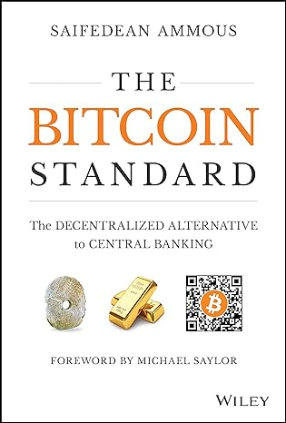

2.2.3 — La geopolitica delle criptovalute
Il 5 agosto 1971, Richard Nixon annunciò la fine della convertibilità del dollaro in oro. Da quel momento, il denaro è diventato una promessa senza garanzia materiale. Saifedean Ammous, in The Bitcoin Standard, argomenta che l'inflazione cronica degli ultimi 50 anni è una conseguenza diretta di quella decisione: i governi possono stampare denaro senza limiti, e la classe media paga il conto attraverso la svalutazione (🤔 ff.50.1 La stranezza degli ultimi 50 anni). Bitcoin nasce come risposta a questo problema: un'offerta monetaria fissa (21 milioni di unità), verificabile da chiunque, non manipolabile da nessuno. Sull’identità del fondatore, il vento è girato di recente: 📎 il NYT indica il crittografo britannico Adam Back come candidato più plausibile a essere Satoshi Nakamoto — sedici anni dopo, l’avatar potrebbe avere un volto. Il numero di tesorerie Bitcoin attive quotate in borsa è aumentato del 50% a 116[1], con un valore aggregato di 86 miliardi di dollari. Nella notte dell'elezione di Trump nel 2024, Bitcoin è passato da 69.000 a 75.000 dollari in poche ore[2]. El Salvador ha accumulato 600 milioni di dollari in riserva strategica[3] (💎 ff.110.3 Le criptovalute contro obsolescenza statale).
L’argomento dettagliato di Ammous si sviluppa su un grafico che mette a confronto il valore di diverse monete rispetto all’oro: tra il 1920 e il 1970 la linea è piatta come un rasoio — il gold standard garantiva una convertibilità precisa tra la valuta di ogni paese e l’oro, rendendo l’inflazione strutturalmente impossibile. Dopo il 1971, il grafico precipita come una cascata: il progresso tecnologico novecentesco — la belle epoque, l’elettrificazione, la radio, l’aviazione — coincise proprio con quella stabilità monetaria. Non è coincidenza: un sistema finanziario prevedibile libera capitale per investimenti a lungo termine. Dopo il dollaro scollegato dall’oro, il futuro si svaluta insieme alla moneta che dovrebbe finanziarlo. Il mercato azionario riflette la stessa ansia: il settore tecnologico americano ha un prezzo per ricavi ancora la metà rispetto alla bolla dot-com[4]. Chi prevede una correzione simile al 2000 guarda alle valutazioni, ma dimentica che il multiplo P/S è la metà di vent’anni fa: il tech di oggi è mediamente più solido in termini di fondamentali dell’euforia che precedette Pets.com. Bitcoin, allora, è un tentativo di ricostruire fuori dallo Stato ciò che prima del 1971 lo Stato garantiva (🪙 ff.50.2 Oro, argento, mirra, birra e Bitcoin).

La geopolitica delle criptovalute racconta una storia di fiducia erosa. Nel 2011, Cina e Giappone detenevano il 23% del debito americano; oggi il 6%. I nuovi compratori di dollari digitali? Nigeria e Argentina — paesi dove il cittadino medio compra USDT come protezione contro l'inflazione locale. Il 70% delle transazioni crypto in Nigeria avviene in stablecoin, non in Bitcoin (💳 ff.135.4 America, Nigeria e criptovalute). Negli USA il 21% degli adulti possiede asset digitali[6] — circa 55 milioni di persone, di cui 6 milioni con portafogli oltre 100.000 dollari. La guerra delle valute digitali è già iniziata: la Cina ha lanciato lo yuan digitale (e-CNY), testato da 260 milioni di utenti; l'Europa prepara l'euro digitale per il 2027; le banche centrali di 130 paesi esplorano le CBDC[7] (🪙 ff.24.1 L’accelerazione della guerra sulle cripto).
Anche gli Stati americani hanno cominciato a comprare, per ora passando dalla Borsa. Il 14 maggio 2024 un modulo 13F depositato alla SEC ha mostrato che l’ente che gestisce gli investimenti dello Stato del Wisconsin aveva comprato, nel primo trimestre, 94.562 quote dell’iShares Bitcoin Trust di BlackRock, l’ETF a pronti sul bitcoin con la sigla IBIT, per un valore vicino ai 100 milioni di dollari. Nello stesso trimestre aveva preso anche quote del Grayscale Bitcoin Trust per circa 64 milioni. Con quel deposito il Wisconsin è il primo Stato americano a dichiarare un acquisto di bitcoin[15]. La parola acquisto va presa con cautela: il fondo ha comprato quote di ETF che seguono il prezzo del bitcoin, e la somma dei due pacchetti arriva a circa 164 milioni, più della cifra finita nei titoli. Quel giorno il bitcoin salì dell’1%, a 61.957 dollari, mentre nella mattina americana usciva un dato sull’inflazione più alto delle attese.
Conta chi ha comprato. Lo State of Wisconsin Investment Board, fondato nel 1951, gestisce oltre 156 miliardi di dollari: dentro ci sono le riserve del sistema pensionistico statale, il Wisconsin Retirement System, lo State Investment Fund e altri fondi fiduciari dello Stato. I 164 milioni in ETF valgono circa un millesimo del totale, ma sono soldi che finiranno in pensioni. Proprio sulla pensione Bill Perkins, quello del “morire con zero”, ricordava che nessuno conosce il giorno della propria morte e che le nostre stime degli anni di vita dopo il lavoro restano grossolane; per questo indicava le rendite vitalizie (🛡️ ff.111.3 Figli, salute e anni sprecati). Poco più di un anno prima, il bitcoin valeva la metà del suo picco, anche per il crollo di FTX, e chi lo dava per una moda del 2021 trovava una risposta secca: le criptovalute restavano attualissime, in un mondo dove si spostano soldi oltre i blocchi e lo Stato-nazione mostra le sue crepe (🔒 ff.52.1 Un mondo criptico).
Il segnale lo ha colto Eric Balchunas, analista senior degli ETF per Bloomberg Intelligence: di solito le grandi istituzioni compaiono nei moduli 13F solo dopo un anno circa, quando un ETF ha accumulato liquidità, ma questi lanci, scriveva su X, sono fuori dall’ordinario. «Buon segno, aspettatevene altri», perché le istituzioni tendono a muoversi in branco. Il mercato seguiva con attenzione quei depositi trimestrali proprio per capire se i grandi fondi della finanza tradizionale fossero entrati negli ETF sul bitcoin dopo il lancio di inizio anno. Che un ente pubblico metta una parte delle sue riserve su un bene a offerta fissa si legge accanto a una tesi più ampia: Ray Dalio vede nella moneta svalutata per finanziare il debito, e nella stampa di dollari degli anni del COVID, i segni della quinta fase del ciclo di un impero (📈 ff.14.2 Nostradamus: Ray Dalio e l’ordine mondiale).
Il branco si era già mosso a febbraio. Il 27 febbraio 2024, scriveva Alex Thorn in una nota ai clienti di Galaxy[16], gli ETF sul bitcoin avevano raccolto 576 milioni di dollari netti in un giorno, 520 solo quelli di BlackRock, il loro giorno migliore, e il bitcoin passava i 59.000 dollari: nuova domanda contro un bene a offerta programmata, per il 75% in mano a chi lo tiene da anni. Nel 2019, a una conferenza blockchain di Londra, gli organizzatori avevano chiesto a pionieri del settore e dirigenti di banca di indicare con un adesivo dove sarebbe stato il bitcoin dieci anni dopo: la grande maggioranza lo vedeva a zero[17], molti a 10.000 o a 100.000 dollari, quasi nessuno in mezzo. Allora valeva circa 4.000 dollari. A metà dell’orizzonte, nota Igor Pejic, avevano ragione quelli dei 100.000, e la lezione è che siamo pessimi a prevedere sia la tecnologia sia gli investimenti.
I mercati di previsione provano a fare meglio di quegli adesivi. Il 10 ottobre 2025 un utente di Polymarket ha capito chi aveva vinto il Nobel per la Pace quasi 11 ore prima dell’annuncio[18]: la quota è passata da 0,08 a 1 dollaro, cento volte per chi era entrato presto. A giugno le scommesse avevano anticipato una guerra: il giorno prima dell’attacco israeliano all’Iran[19] la probabilità data dal mercato era salita al 60%. Lo stesso mercato, a fine 2025, era sempre più sicuro che Google avrebbe avuto il modello migliore dell’anno (🍫 ff.139.3 Dov’è la mia macchina volante (in GTA 6?)). Nel 2021 Nick Whitaker, sulla rivista di filosofia, politica ed economia della Brown University, sosteneva che davanti a un mercato di previsione che funziona bene si è razionalmente tenuti ad adottarne la stima[20]: il prezzo di una quota è una probabilità, 0,25 dollari valgono il 25%, e il mercato tende a raccogliere e aggregare tutta l’informazione disponibile, meglio di commentatori e sondaggi.
Mentre i mercati distribuiscono l’informazione, la politica sperimenta con le piattaforme. Il Nepal ha eletto il primo ministro tramite Discord; l’Albania ha proposto un ministro creato con l’intelligenza artificiale, in un paese dove un terzo dei soldi pubblici finisce bruciato in corruzione (🏛️ ff.135.5 Politica tecnologica). Taiwan, nel frattempo, intende produrre 180 mila droni all'anno entro il 2028[8], e la sua TSMC ha investito 40 miliardi di dollari negli Stati Uniti in un anno: ogni Stato cerca di essere il più indipendente possibile, e meno commercio fra paesi vuol dire più rischio di tensioni (🐌 ff.42.3 Bastoni tra le AI-ruote).
L’embargo verso la Cina di chip e di macchine litografiche di ASML è in atto da tempo, e Chris Miller lo racconta in Chip War[9] (🥶 ff.82.3 Guerra fredda). La logica è quella del calcolo: l’AI dipende dalla potenza per allenarla, il know-how delle schede grafiche è americano, con NVIDIA e AMD, e l’embargo serve a rallentare la Cina; sul lungo periodo, come nei microchip, dove Stati Uniti ed Europa costruiscono fabbriche proprie, potrebbe spingerla a rendersi indipendente anche sull’AI. Sul fondo c’è un ordine mondiale che cambia: in un grafico mostrato da Lily Liu della Solana Foundation, dal 1970 il PIL americano è cresciuto 20 volte e il debito pubblico 83 volte, e per Niall Ferguson una grande potenza che spende più per il debito che per la difesa rischia di smettere di esserlo (🏯 ff.125.1 Cicli imperiali). Balaji Srinivasan propone un’alternativa al dominio cinese: Internet come nuova nazione (🌐 ff.125.4 L’alternativa alla Cina: Internet).

La convergenza tra AI e criptovalute è il nodo meno visibile ma più esplosivo. L’economia di conversione soldi/tempo-calcolo sta esplodendo, insieme all’energia necessaria, tanto che Microsoft sta pensando a reattori nucleari per alimentare i data center[10]. VISA e Mastercard impiegano fino a un mese per processare i pagamenti di questi servizi, ma aziende come OpenAI permettono l’accesso istantaneo al calcolo. Il mismatch tra tempo-calcolo e hardware — che può essere usato anche per minare Bitcoin — diventa un’inefficienza pericolosa del sistema. Peggio: VISA e Mastercard non sono accessibili a tutti. Anche utenti certificati hanno visto il proprio accesso bloccato (il Garante della Privacy[11] ne sa qualcosa). In quei casi, la blockchain è stata l’unica via d’accesso al calcolo, e quindi al futuro (🤖 ff.73.2 La convergenza AI-Bitcoin).
Nel 2011, Cina e Giappone detenevano il 23% del debito americano; oggi il 6%. Il 70% delle transazioni crypto in Nigeria avviene in stablecoin. Le stablecoin nel 2024 hanno movimentato 15 trilioni di dollari, superando Visa e Mastercard messe insieme.
La partita, però, è anche istituzionale. Quando un network ridefinisce proprietà, pagamenti e identità, cambia anche il perimetro dello Stato e delle piattaforme private. È per questo che il tema crypto compare accanto a sovranità, governance e lavoro, come stress test del patto sociale digitale. Lo spostamento demografico che nel capitolo Società viene analizzato come “barbell strategy”[12] trova nella decentralizzazione una grammatica economica coerente: la prima — la sovranità spostata sui protocolli — è il tema di 🌐 ff.95.1 La sovranità dei network; la seconda — il contesto monetario post-Bretton Woods che ha reso possibile l’intero esperimento crypto — viene da 🤔 ff.50.1 La stranezza degli ultimi 50 anni.
Saremo sempre più nauseati da contenuti digitali e, per «digerire» questo «guanciale generativo» di testi, immagini e oggetti, serve validarne la storia e la singolarità nello spazio-tempo digitale. Lanciata nel 2023, la Bitcoin Inscription lega ogni satoshi — un «centesimo di Bitcoin» — a dati digitali in modo univoco. La cripto diventa così meccanismo di autenticazione ontologica del contenuto: un registro ufficiale dell'unico in un mare di copie. Carbonara e criptovalute[13] (🍝 ff.85.4 Carbonara e criptovalute).
Stripe e Paradigm hanno lanciato Tempo, una blockchain L1 ottimizzata per pagamenti in stablecoin[14] con fee prevedibili e basse. Il segnale è infrastrutturale: una PSP da centinaia di miliardi di volume adotta il proprio binario crypto invece di appoggiarsi a Ethereum o Solana. Se le stablecoin diventano il rail pagamenti di riferimento, il middleware bancario tradizionale — SWIFT, corrispondenti, clearing — perde la rendita di posizione una fila di routing alla volta.
I binari dei pagamenti, oggi, passano dai telefoni. Secondo il rapporto del Consumer Financial Protection Bureau sui pagamenti contactless[21], nel 2022 gli americani hanno speso nei negozi 199 miliardi di dollari con Apple Pay, contro i 46,9 del 2019; Apple incassa una commissione su ogni transazione, stimata in oltre 1,9 miliardi nel 2022, e vieta alle banche di ribaltarla sui clienti. Gli analisti prevedono che il valore dei pagamenti tap-to-pay con i portafogli digitali crescerà di oltre il 150% entro il 2028. Le stablecoin propongono un binario parallelo. Nic Carter le paragona a uno Starlink per il denaro[22]: come Starlink porta online per la prima volta miliardi di persone, le stablecoin danno a miliardi di persone il primo accesso al dollaro, fuori dalle vecchie infrastrutture; sono una ridondanza comoda dove l’infrastruttura funziona, essenziali dove manca. Si diffondono soprattutto nei BRICS e in Arabia Saudita (💵 ff.125.2 Stabilizzare il dollaro).